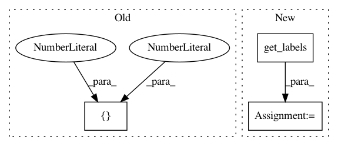

e69f57395d899146ad1ca9e6409eb87f4f298a43,grakel/kernels/weisfeiler_lehman.py,weisfeiler_lehman,parse_input,#weisfeiler_lehman#Any#,92
Before Change
warnings.warn("Ignoring empty element on index: "
+ str(idx))
continue
elif len(x) in [2, 3]:
x = graph(x[0], x[1], {},
graph_format=self._graph_format)
else:
After Change
x = Graph(x[0], x[1], {},
graph_format=self._graph_format)
elif type(x) is Graph:
x = Graph(x.get_edge_dictionary(),
x.get_labels(purpose="dictionary"), {},
graph_format=self._graph_format)
else:
raise ValueError("each element of X must be either a " +
"graph object or a list with at least " +
"a graph like object and node labels " +
In pattern: SUPERPATTERN
Frequency: 3
Non-data size: 3
Instances
Project Name: ysig/GraKeL
Commit Name: e69f57395d899146ad1ca9e6409eb87f4f298a43
Time: 2018-02-05
Author: y.siglidis@gmail.com
File Name: grakel/kernels/weisfeiler_lehman.py
Class Name: weisfeiler_lehman
Method Name: parse_input
Project Name: has2k1/plotnine
Commit Name: 7fe5355c5fbfa9bf85f0b0eb9523ff6f35f33788
Time: 2014-06-13
Author: jonas@ifany.org
File Name: ggplot/components/alphas.py
Class Name:
Method Name: assign_alphas
Project Name: has2k1/plotnine
Commit Name: 7fe5355c5fbfa9bf85f0b0eb9523ff6f35f33788
Time: 2014-06-13
Author: jonas@ifany.org
File Name: ggplot/components/size.py
Class Name:
Method Name: assign_sizes